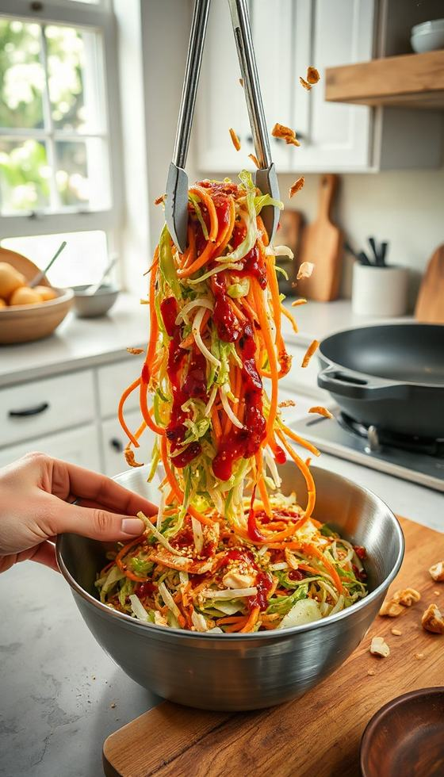
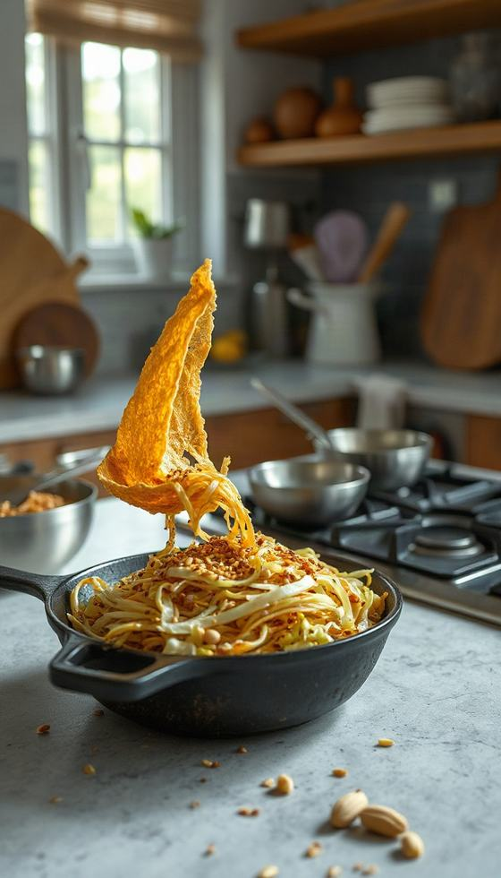

Mistake Monday
Budget Susur Lee-Style Singapore Slaw
About $4.79* · 4 servings · 15 min
*Prices are estimates and may differ from what you pay. How we price recipes
Stop drowning your slaw before it hits the table. 🥗




Ingredients
- 1/2 small red onion, very thinly sliced
- 3 tbsp rice vinegar
- 1 tsp sugar
- 1 pinch salt
- 1/4 small green cabbage (about 300 g), finely shredded
- 1 medium carrot, julienned or coarsely grated
- 1/4 English cucumber, seeded and cut into thin matchsticks
- 1 package instant ramen noodles (seasoning packet set aside for another use)
- 1/4 cup roasted peanuts, roughly chopped
- 1 tbsp sesame seeds
- 1/3 cup leftover or canned cranberry sauce (whole-berry or jellied)
- 1 tbsp soy sauce
- 1 tbsp lime juice (about 1/2 lime)
- 1 tbsp vegetable oil
- 1 tsp toasted sesame oil
- 1 pinch red chili flakes
- 2 green onions, thinly sliced
Steps
- Quick-pickle first: in a small bowl, stir 3 tbsp rice vinegar, 1 tsp sugar and a pinch of salt until dissolved. Add the thinly sliced red onion, press it under the liquid and let it sit for 10 minutes while you prep everything else.
- Shred the cabbage as finely as you can, julienne or grate the carrot, and cut the seeded cucumber into thin matchsticks. Pat the cucumber dry with a paper towel, then pile all the vegetables into a large bowl and refrigerate them, undressed.
- Make the crunch: crush the ramen block into small pieces, still inside the bag. Toast in a dry skillet over medium heat for 2 to 3 minutes, stirring often, until golden and fragrant. Add the sesame seeds for the last 30 to 60 seconds, until lightly golden. Tip onto a plate to cool, then mix in the chopped peanuts.
- Whisk the dressing: mash 1/3 cup cranberry sauce with a fork until mostly smooth. Whisk in 1 tbsp soy sauce, 1 tbsp lime juice, 1 tbsp of the onion pickling liquid, 1 tbsp vegetable oil, 1 tsp sesame oil and a pinch of chili flakes. Taste it; it should be sweet, salty and tangy, like plum sauce.
- Right before serving (not a minute sooner), drain the pickled onions and scatter them over the cold vegetables with the green onions. Pour on the dressing and toss well for about 30 seconds.
- Shower the toasted noodle, peanut and sesame crunch over the top, give it one last quick toss, and serve immediately while it is loud and crunchy.
What you'll need
Gear links go to Amazon (Amazon.ca, or Amazon.com in the US). As an Amazon Associate I earn from qualifying purchases, at no extra cost to you.
Watch the videoMore $5 recipes
About the prices: they're estimates, not quotes. Since Nov 2026 they're based on Statistics Canada's monthly average retail prices where an item is listed (Open Government Licence - Canada), otherwise on typical Canadian grocery prices, and count only the amount of each ingredient used, not whole packages. What you pay will vary by store, location, brand, sales, taxes and date, and any pantry staples you need to buy will add to it. Recipe visuals and narration are AI-generated.